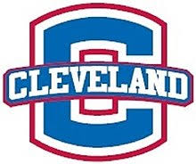
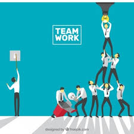

I have a varsity spot on the Bartlett High School Wrestling Team at 113 pounds. Occasionally, we will travel out of town to wrestle people that we don't normally wrestle to see new competition. This helps us to see who we'll be wrestling at the state tournament and in national tournaments. This time we traveled to Cleveland, Tennessee to participate in the Cleveland High School Dual Tournament. We went in knowing what we were up against and didn't expect very much but we had a good outing.
Once we arrived at the hotel, we all went to one room and checked our weight. As always on the night before, I was overweight by about a pound. This meant I had to cut. I put many layers of clothes on and went to the workout room in the hotel for about an hour. I checked weight again after this and I was down to 112.8. I was .2 under so I could relax for the rest of the night. The people that could eat went out for food but the rest of us stayed at the hotel. I had about 5 other people in my room so when they got back it was pretty crazy. We stayed up until 2 AM just listening to music and hanging out. We went to sleep knowing we had war the next morning.
The whole day was rough from the start. Everyone in my room was late waking up. We hurredly put on our warm-ups and grabbed our headgear and wrestling shoes. We got to the school, weighed in, and ate before it was time to start wrestling. Our first match was against Mountain View High School. They were from Georgia. I, as well as many of the other lightweights, won my match, but it was not enough for us to beat them as a team. However, we had to move on to the next round. We then wrestled Gilmar High School, also from Georgia, I won once again, but like the last time it wasn't enough and we lost as a team once more. The next round came and we had to wrestle Cleveland High School, the number one ranked team in Tennessee. The only person to win a match was our 132. I, as well as others, had to wrestle the number one kid in our weight class. This was a tough loss for us. Everyone was down so me and the other team captain, Kamerone Franklin, talked to them and explained to them that we couldn't let this loss bother us and we had to keep going. They all stepped up and we won our next match against Carrolton High School. However, during that match two of our guys were hurt. We went into our next match against in-state rival Summit High School down two wrestlers. Everyone understood what was at stake and wrestled their hearts out. It came down to the very last match with our 132 pound wrestling getting pinned to seal the victory for Summit by 3 points. Wrestling was done for the trip.
Overall, it was a great outing for us and we needed those losses to help strengthen us as a team. Everyone learned something and everyone had fun and that's all that matters.